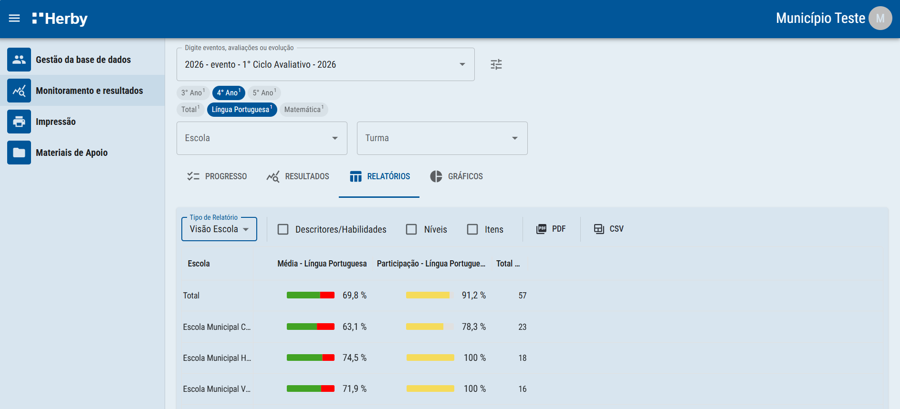
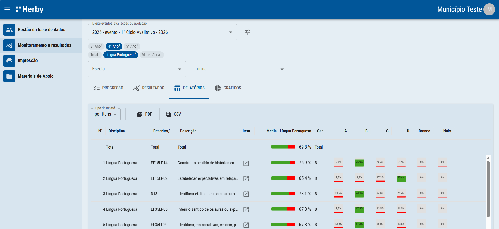
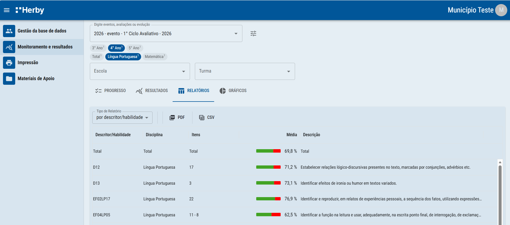
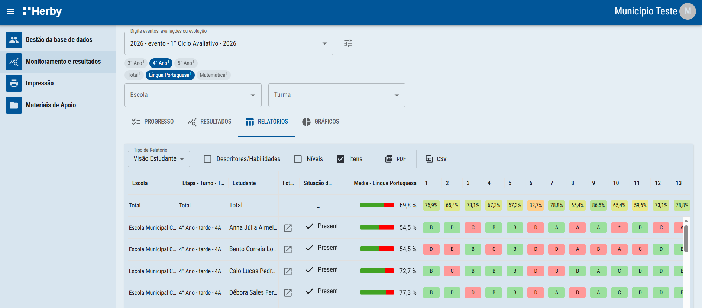
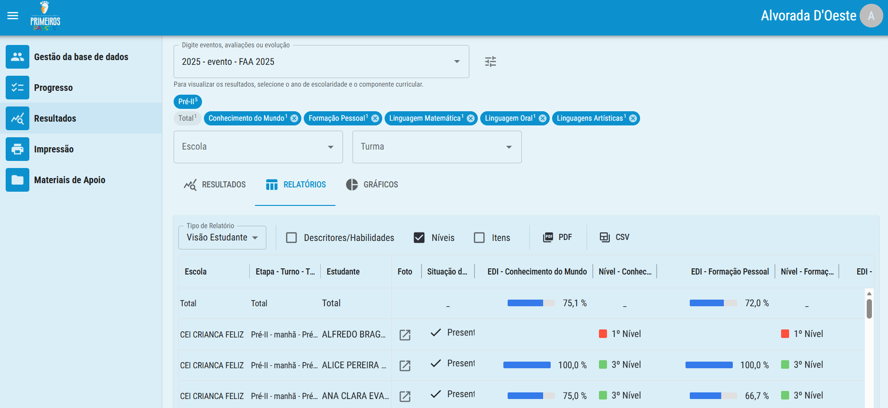

Relatórios personalizáveis por item, por descritor ou habilidade e por estudante, com download em PDF ou CSV.
Nessa tela você poderá acessar e personalizar diferentes relatórios, selecionando-os em Tipo de Relatório.

Relatório por itens: neste relatório temos a informação por item, por nº do item, descritor, média de acertos e a distribuição de marcação por alternativa.

Relatório por descritor/habilidade: neste relatório temos, por descritor, a informação da média de acertos.

Relatório visão estudante: neste relatório, temos as informações referentes a cada estudante: a situação (presente, ausente, pendente ou anulado), a média de acertos, a foto do cartão processado e até as respostas para cada questão.

